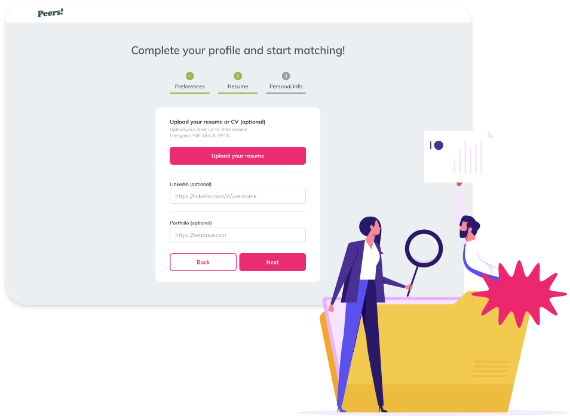

Encontre um emprego que combina com você!
Tenha acesso aos melhores empregos remotos dos EUA e da Europa abertos na América Latina.
Job Matching
Criamos a Peers para que você possa se conectar com os fundadores e combinar com os melhores empregos.
account_circle
Crie seu perfil.
Conte-nos sobre você, suas habilidades e experiência em 3 etapas fáceis.
playlist_add_check_circle
Cadastro rápido. Preencha mais de 80% do cadastro e comece a se candidatar facilmente a novos empregos.
notifications_active
Receba notificações. Defina seu status de contratação e comece a receber mensagens das empresas.
Como Funciona
01.
Adicione a versão PDF do seu perfil no LinkedIn e automaticamente tenha acesso a seu perfil digital.
Passo 01
Passo 02
Passo 03
